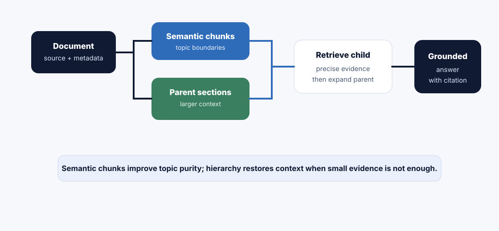

Fixed and recursive chunking split by size and structure. Semantic and hierarchical chunking go one level deeper: they try to preserve topic meaning and document relationships so retrieval can find small evidence while still recovering the larger context around it.
How to read this chapter
Read it as context engineering: semantic chunking asks where the topic naturally changes; hierarchical chunking asks how a small chunk relates to its parent section.
Do not overbuild: simple recursive chunking is often enough. Use semantic or hierarchical strategies when evaluation shows boundary or context failures.
Track relationships: parent document, section, child chunk, sibling chunks, and heading path all matter in production retrieval.
Design for retrieval: the goal is not elegant slicing; the goal is better evidence selection, citations, and answer faithfulness.
A small chunk can retrieve precisely but lose context. A parent section can explain context but be too broad. Hierarchical retrieval lets you use both.
Core ideaSemantic chunking follows topic boundaries. Hierarchical chunking stores relationships between small child chunks and larger parent sections so retrieval can be precise and context-rich.
Sub-topic 1 of 11
Why Advanced Chunking Matters
At a glance
Semantic chunking helps when paragraphs shift topics unevenly.
Hierarchical chunking helps when small evidence needs a larger parent context.
Parent-child retrieval can retrieve small chunks but send parent context to the model.
These strategies add complexity, so they should be justified by failures or product needs.
Why this matters: many RAG failures are not caused by bad embeddings. The right paragraph may be found, but the model misses the surrounding section that explains conditions, definitions, or exceptions.
Chapter 9 taught fixed and recursive chunking. Those are strong baselines. But some documents are more complex: long policies with exceptions, tutorials with code blocks, research reports with layered sections, and runbooks where a step only makes sense inside the procedure.
Advanced chunking north starRetrieve the smallest useful evidence, then recover the context that makes it safe to answer.
Do not force one chunk to do every job. Child chunks can find evidence; parent chunks can explain it.
01
Are topic boundaries uneven?
Consider semantic chunking when paragraphs or sections contain multiple topic shifts that simple size rules miss.
02
Does evidence need parent context?
Consider hierarchical chunking when a retrieved paragraph needs the surrounding section for faithful answers.
03
Can simple chunking pass evals?
Keep recursive or fixed chunking if golden questions already retrieve complete, citeable evidence.
04
Can you operate the relationships?
Track parent ids, child ids, source positions, retrieval expansion rules, and evaluation by hierarchy level.
Sub-topic 2 of 11
Real-Life Analogy: A Book With Chapters, Sections, and Paragraphs
If someone asks a precise question, you may point them to one paragraph. But if they need to understand the rule properly, you may also tell them the chapter and section it belongs to.
Hierarchical chunking works like that. The paragraph is the child chunk. The section is the parent chunk. The whole document is the grandparent. Retrieval can start precise and then expand context responsibly.
Parent-child retrieval balances precision and context.
Sub-topic 3 of 11
Semantic Chunking
Semantic chunking groups text by meaning rather than only size or separators. It tries to keep related ideas together and split where topics change.
Semantic boundary idea
Paragraphs about refund eligibility
-> stay together
Paragraphs shift to cancellation workflow
-> new chunk
Paragraphs shift to enterprise exception
-> new chunk or child chunk linked to parent policy section
Best fit
Reports, policies, tutorials, FAQs, and research documents where topic changes do not follow neat size boundaries.
Advantages
Better topic purity, less noisy context, stronger citations, and better answer faithfulness for concept-heavy content.
Watch-outs
More expensive to build, harder to debug, and sensitive to topic-detection quality. It still needs size limits.
Mentor note: semantic chunking should be proven by retrieval evals. Do not use it just because it sounds smarter.
Sub-topic 4 of 11
Hierarchical Chunking
Hierarchical chunking stores multiple levels of context: document, section, subsection, paragraph, and sometimes sentence or row. Each child chunk knows its parent.
Small chunks help the retriever find the exact evidence that matches the question.
Context
Expand to parent sections
Parent chunks provide definitions, constraints, and exceptions around the retrieved evidence.
Citations
Cite exact child evidence
Use the child chunk for exact citation, while using parent context to avoid misunderstanding.
Operations
Maintain relationships
Every child needs parent id, heading path, section, source position, and index version.
Sub-topic 5 of 11
Parent-Child Retrieval
Parent-child retrieval usually searches child chunks first. Once the best child chunks are found, the system can fetch their parent sections for context.
Production case study
Security runbook answer
A user asks: "What do I do if the customer-log export job fails during Sev1?"
Child retrieval: finds the exact failure step.
Parent expansion: includes the Sev1 incident workflow section around that step.
Advanced chunking is not automatically better. It adds storage, logic, evaluation complexity, and operational burden.
Use simple
Clean FAQ or short docs
If each question-answer pair or short section already retrieves cleanly, fixed or recursive chunking is enough.
Use semantic
Topic shifts inside long sections
If size-based chunks mix unrelated concepts, semantic boundaries can improve precision.
Use hierarchical
Small evidence needs larger context
If precise chunks retrieve but answers lack surrounding definitions or exceptions, parent-child retrieval helps.
Use evals
Let failures justify complexity
Upgrade only when golden queries show lost context, mixed topics, weak citations, or parent-context dependency.
Sub-topic 7 of 11
Architecture View

Semantic chunking improves topic boundaries. Hierarchical chunking preserves relationships so retrieval can expand from child evidence to parent context.
Parent-child retrieval flow
user question
-> retrieve child chunks
-> select best child evidence
-> fetch parent section
-> assemble child citation + parent context
-> answer with grounded citation
Symptom: retrieval behavior changes after re-indexing, but nobody knows why.
Better move: store chunker version, hierarchy version, expansion rule version, and index version.
Sub-topic 10 of 11
Mini Assignment
Pick one corpus: security runbooks, HR policies, developer docs, or product tutorials. Decide whether fixed, recursive, semantic, or hierarchical chunking is justified. Define child chunks, parent sections, metadata, expansion rules, and two golden questions.
Sub-topic 11 of 11
Points To Remember
Semantic chunking follows meaning and topic boundaries.